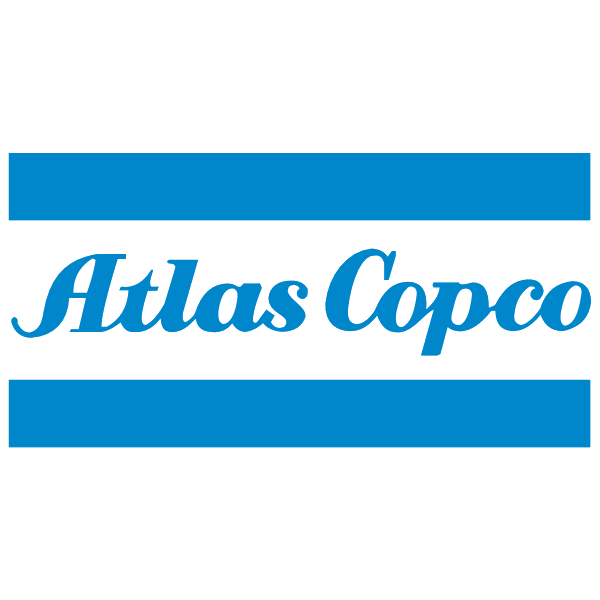

Internship
Manufacturing Engineering Intern
Atlas Copco
Modeling shop-floor and quality-control layouts for a facility expansion, producing skid-plate drawings, validating a custom production fixture, and supporting 5S and additive-manufacturing investment work.